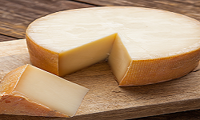

Un lugar que vale la pena visitar

Ofrecemos la mayor gama y variedad de quesos canchaqueños bajo un solo techo, con ganadería y elaboración propias con el mejor secreto artesanal de nuestra serranía.
Le atenderemos con esmero y cortesía en el cálido y grato ambiente rústico costumbrista que hemos adecuado especialmente para albergar en "Los Tijerales del Arte Culinario" en nuestra antigua casona ubicada en el centro histórico de la ciudad.
Con una amplia variedad de quesos

Tenemos a la venta una gran variedad de quesos como: Andino, Criollo, Euro, Paria y Parmesano. De la marca "El Cholo".
Hechos artesanalmente al 100% leche fresca y natural, exclusivamente de Canchaque. Lo invitamos a visitar nuestro local y conocer los diversos quesos que ofrecemos.